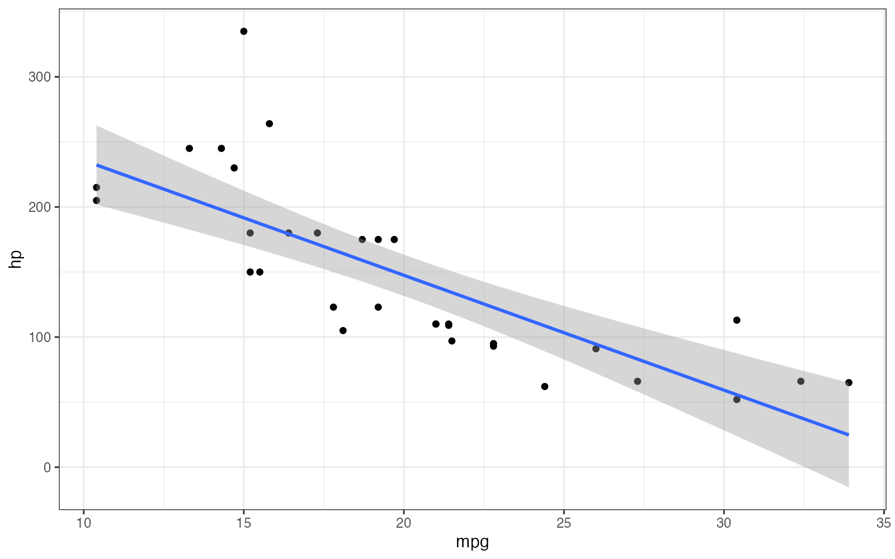
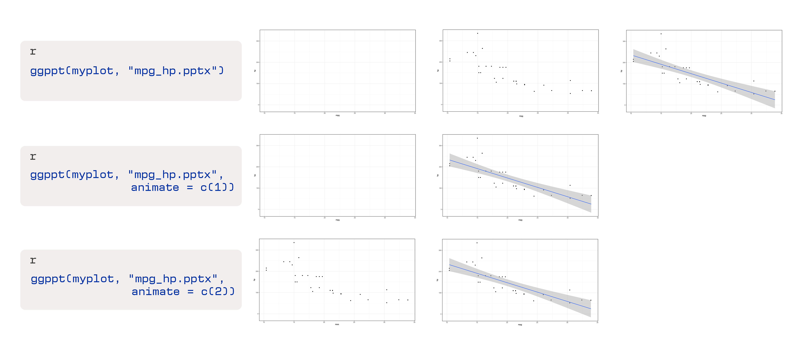

gganimslide lets you animate the layers of your ggplots for PowerPoint or LaTeX beamer presentations. In PowerPoint, the layers become editable vector shapes, allowing for further customisation after the slide has been created with ggppt(). Native PowerPoint animations are written into the slide. ggtex() writes a multi-page PDF and the frame code as a .tex file.
Installing gganimslide
# install.packages("remotes")
remotes::install_github("joellattmann/gganimslide")
# dependencies (`ggplot2`, `officer`, `rvg`, `xml2`) are installed automaticallyThe basics: ggppt() and ggtex()
Consider the following example using R’s mtcars dataset:
library(ggplot2)
myplot <- mtcars |>
ggplot(aes(x = mpg, y = hp)) +
geom_point() + # layer 1
geom_smooth(method = "lm") + # layer 2
theme_bw()This plot has two layers, geom_point() and geom_smooth(method = "lm"):

For simplicity, all arguments except for the plot and the file name can be left blank. Thus, the minimal version to turn this into an animated PowerPoint slide looks like this:
library(gganimslide)
ggppt(myplot, "mpg_hp.pptx") # powerpointNot specifying the animate = argument corresponds to listing, and consequently animating, every layer of the plot, so this is the same as:
All the options shown in the following figure produce exactly one slide. The frames compare the animation steps created for each example. With animate = c(1), the animation starts at the first layer: the slide opens with only the axes, and one click reveals both layers. With animate = c(2), the animation starts at the second layer: the slide opens with geom_point() already present, and one click adds geom_smooth().

The following code shows how a more elaborate animation with ggppt() works for a plot p. In animate =, positive numbers mark the layer at which a step animates in (each step runs up to the next number); negative numbers animate out the step that started at that layer.
ggppt(p, "savings.pptx",
animate = c(1, 2, 3, 5, 6, 8, -8),
effect = c("wipe_up", "wipe_left", "fade", "wipe_left", "fade", "fade", "fade"),
trigger = c("click", "click", "after", "click", "after", "click", "click"),
duration = c(1, 2.5, 0.5, 2.5, 0.5, 0.6, 0.6))The result is one slide. It looks like this:
The defaults for the main arguments are as follows:
-
animate =: all layers are animated, corresponding to a vector enumerating all layers of the plot -
effect =:"appear" -
trigger =:"click" -
duration =: 0.5 seconds (duration =has no effect if"appear"is chosen)
To create a LaTeX beamer presentation instead, use ggtex():
Within-layer animations: categorical = TRUE
With categorical = TRUE, every group within a step is revealed on its own: each bar, each box, each colour group or line from a colour =/fill = mapping, in group order. The step’s effect =, trigger = and duration = apply to each group, and a negative number removes all groups of that step at once.
Functions
| function | what it’s for |
|---|---|
ggppt() |
animated PowerPoint slide |
ggtex() |
animated beamer slide (multi-page PDF + LaTeX code) |
ppt_deck() |
new 16:9 deck to collect several plots with ggppt(doc = ...)
|
plot_components() |
shows which number each part of a plot has under each scope =
|
animation_steps() |
previews how an animate = vector is split into steps, e.g., animation_steps(6, c(3, 4, 5))
|
steps() |
stores the component order of a saved plot, needed for scope = "all" / "all_but_theme"
|
The scope = argument: what the numbers in animate = count
Except for teaching purposes, you may not want to reveal, i.e., animate, anything other than the plot layers. With the default scope = "layers", only geoms, stats and annotate() are counted as possible animation steps. Axes, titles, legend and theme are always shown. Two more options let you reveal any + component:
scope |
numbers count |
|---|---|
"layers" (default) |
geoms / stats / annotations |
"all" |
every + component in the order written: geoms, labs(), scales, coords, facets, theme_*(), theme()
|
"all_but_theme" |
the same, but theme() / theme_*() are not counted and always applied |
A finished ggplot forgets the order in which its components were added, so for "all" and "all_but_theme" the package needs that order. Either wrap the plot code in steps() when you make the plot (the order is stored in the object and survives saveRDS() / readRDS()), or write the plot code directly into the ggppt()/ggtex() call. The helper function plot_components() shows how the components are numbered under each scope.
Limitations
- Supports standard
ggplot2panels (any geom,facet_wrap()/facet_grid(),coord_cartesian()/coord_flip()). Exotic extensions that change the panel structure give a clear error. - The legend belongs to the static part, so it is visible from the start.
Citation
If you use gganimslide in your work, please cite it:
citation("gganimslide")Lattmann, J. F. (2026). gganimslide: Reveal ggplot2 Layers Step by Step in PowerPoint and Beamer Slides. R package version 0.2.0. https://github.com/joellattmann/gganimslide